Sortwick: Joc de sortareAranjează rafturile. Refă orășelul.
Pune rafturile în ordine. Fă triplete. Readu la viață un orășel de pe malul mării și cunoaște-i pe cei care locuiesc acolo.
Gratuit pe iPhone · Se joacă offline · Fără cont


Ce este Sortwick?
Sortwick este un joc de sortare gratuit pentru iPhone și iPad. Muți obiectele de pe un raft pe altul, aduni trei la fel ca să le elimini și cheltui stelele câștigate restaurând Saltwick, un orășel de pe malul mării. Un puzzle de sortat liniștit, pentru adulți cărora le plac ordinea și o provocare adevărată: reguli de tip triple match, sute de niveluri, se joacă offline.
- Gratuit pe iPhone
- iOS 17 sau mai nou
- Se joacă offline
- 9 limbi
- Fără cont
Cum se joacă, în 10 secunde
Mută obiectele între rafturi și formează triplete ca să le elimini. Fiecare nivel are soluție, iar fiecare victorie aduce stele pe care le cheltui restaurând Saltwick: farul, cafeneaua, felinarul, un loc pe rând.
Atinge un obiect, apoi un raft
Muți câte un obiect pe un raft care are un loc liber.
Trei la fel dispar
Adună trei obiecte identice și raftul se eliberează.
Câștigi stele, refaci Saltwick
Fiecare nivel trecut aduce stele pentru următorul loc din orășel.
O privire în joc
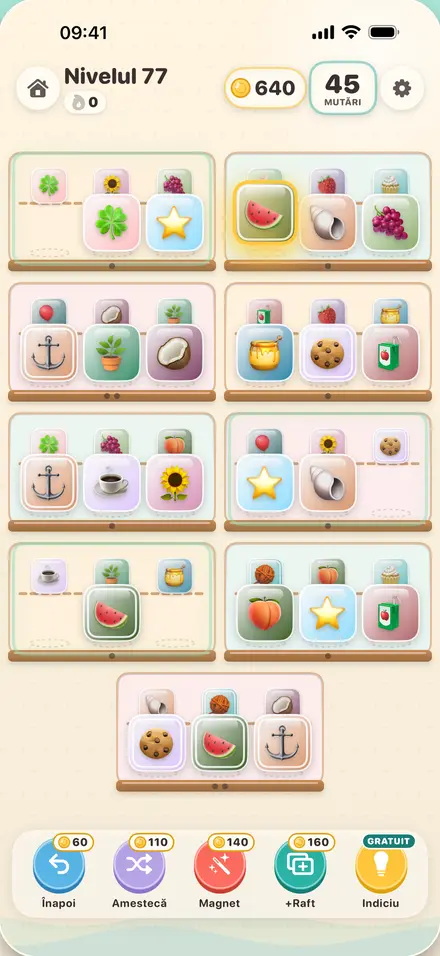
Trei la fel, raftul se golește 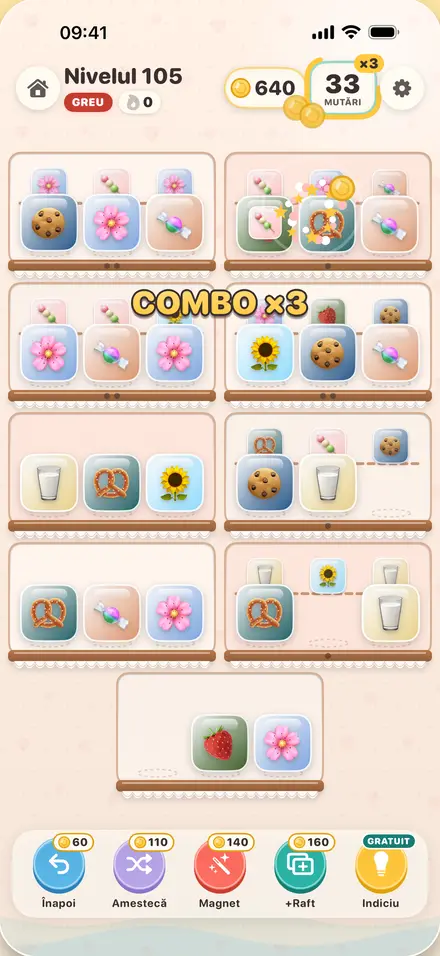
Înlănțuie tripletele pentru combo 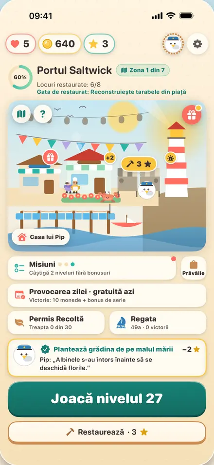
Un orășel care îți răspunde 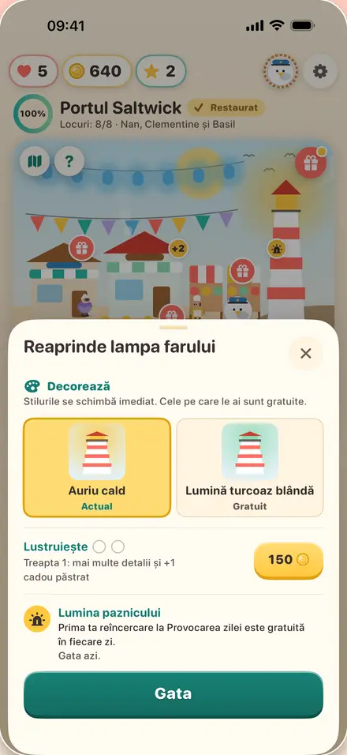
Decorează fiecare loc după gustul tău 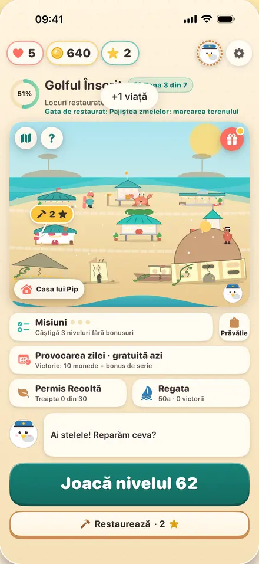
Locurile restaurate îți fac cadouri 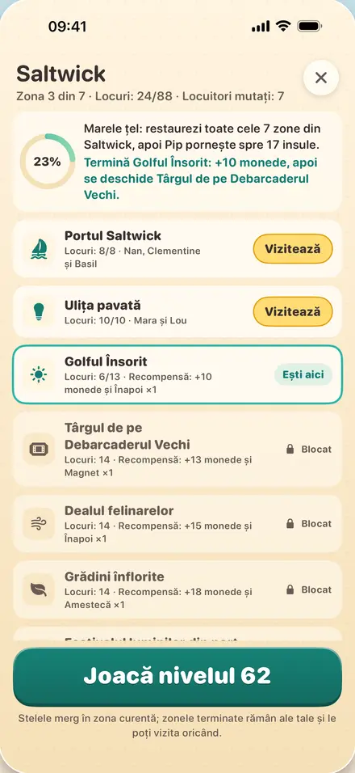
Șapte zone de readus la viață 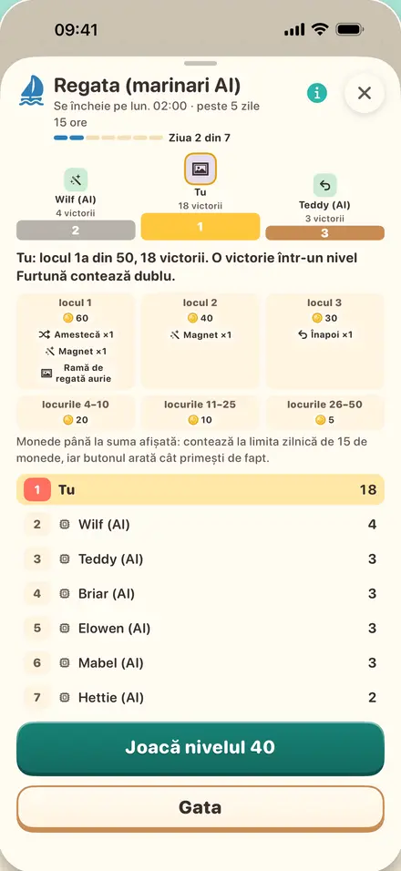
Fii primul în fiecare săptămână
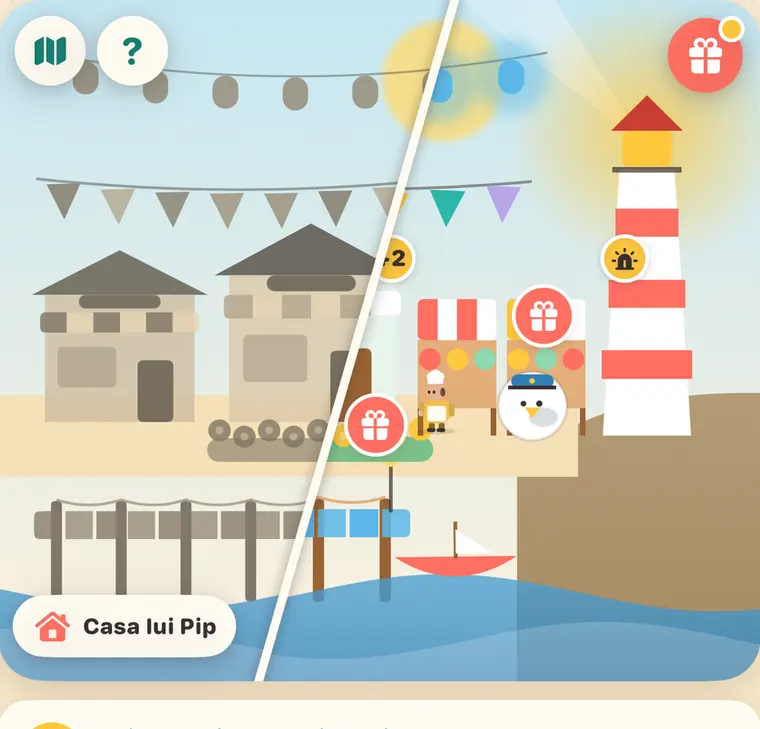
Un orășel care îți răspunde
Câștigă stele, reclădește Saltwick
- Șapte zone de restaurat, de la portul Saltwick la Festivalul luminilor din port, apoi insulele
- Locuitori ca Nan, Basil, Clementine și Mara se mută imediat ce le-ai reparat casa: se plimbă pe faleză, iar o atingere îți aduce o replică
- Fiecare restaurare e o scurtă conversație: locuitorul vorbește, Pip, pescărușul portului, răspunde
- Brutăria și farul fac ceva: micul dejun al lui Basil adaugă 2 mutări la primul tău nivel din zi, iar paznicul farului îți plătește prima reîncercare din Provocarea zilei
Fă cunoștință cu locuitorii

Pip
Pip, pescărușul portului, îți urează bun venit în Saltwick și are un răspuns pentru fiecare.

Nan
Nan se mută înapoi imediat ce colțul ei din port este restaurat și are mereu o replică pentru tine.
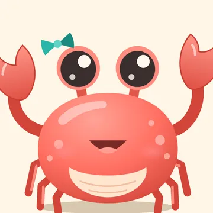
Clementine
Clementine, crabul de pe faleză, îți răspunde la o atingere.
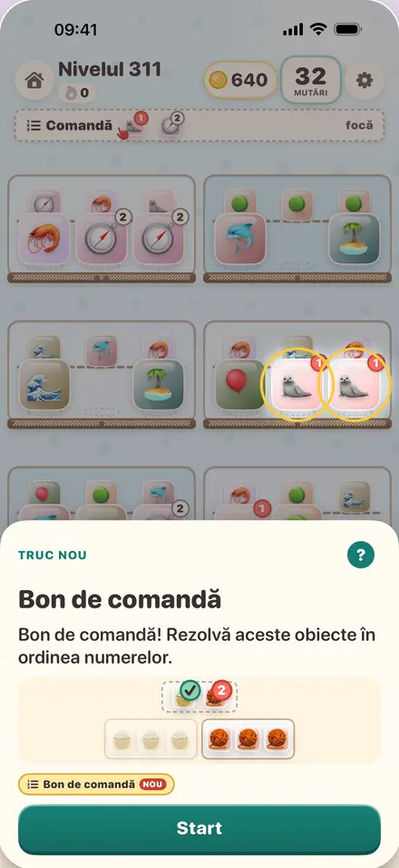
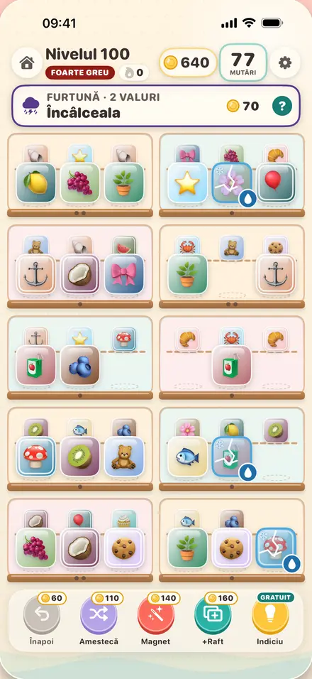
Trucuri noi, pe rând
- Rafturi crăpate, tobogane, caruseluri, tejghele, viscole și bonuri de comandă se alătură gheții, lacătelor, cadourilor, lanțurilor, lăzilor, ceții, nivelurilor contratimp și benzii rulante
- O fișă de început arată fiecare truc nou pe obiectele nivelului înainte de prima mutare, iar ghidul „Cum se joacă” ține fiecare regulă la o atingere distanță
- Trucurile se combină, apar variante, iar turele duble aduc un al doilea val de obiecte pe tablă
O provocare adevărată
- Dificultatea crește cu adevărat: niveluri GRELE, niveluri FOARTE GRELE, niveluri Furtună, niveluri misterioase și pauze liniștite
- Table în turnuri, scări, coloane despărțite, raft liber și altele
- Bonusurile Anulează, Amestecă și Magnet când le vrei tu, niciodată impuse
Prin ce e diferit Sortwick
O descărcare mică
Aproximativ 27 MB. Se instalează imediat și lasă loc pentru pozele tale.
Se joacă offline
Fără cont și fără conexiune: în tren, în avion, oriunde.
Mutări, nu cronometru
Nivelurile sunt limitate de mutări, așa că ai timp să te gândești. Doar rarele niveluri contratimp au cronometru.
Fără reclame forțate în primele 100 de niveluri
Reclamele dintre niveluri sunt rare, în mod intenționat, și nu apar niciodată după o înfrângere. Videoclipurile cu recompensă sunt mereu alegerea ta.
Făcut pentru orice ecran
Sortwick se potrivește pe ecranul tău: iPhone, ecranul interior lat al unui telefon pliabil și iPad.
Liniștit și offline
- Se joacă offline, fără cont
- Cadouri zilnice, misiuni, o Provocare a zilei, o Regată săptămânală și un sezon de 28 de zile
- Colecționează cărți în album, deblochează realizări și decorează casa lui Pip cu mobila pe care o aduni
- Gratuit. Cumpărăturile nu schimbă niciodată soluția unui nivel, iar lăzile din album nu se pot cumpăra: șansele lor sunt mereu afișate
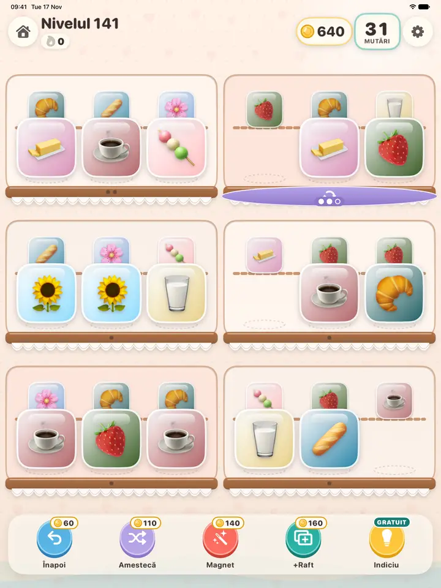
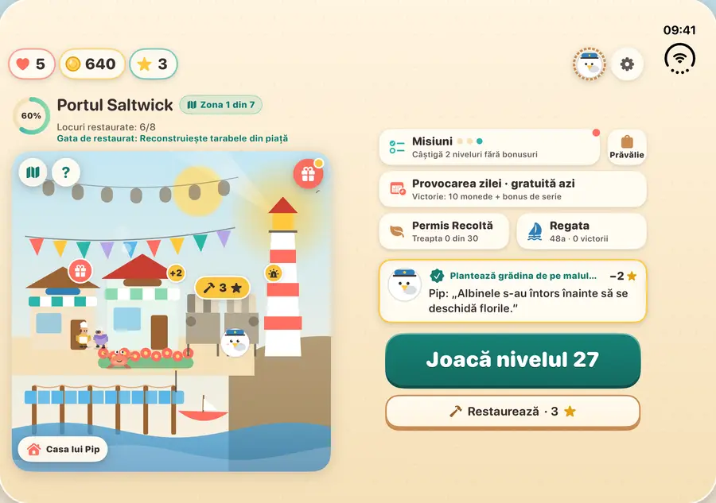
În curând
Android: ajută-ne să testăm
Sortwick pentru Android este în testare închisă pe Google Play și nu a fost lansat încă. Intră în test, joacă mai devreme și spune-ne ce părere ai.
Intră în testul AndroidPagina de test este în engleză.

Întrebări
Ce este un joc de sortat produse?
Un joc de sortat produse (numit și goods sort, triple match sau match 3 cu obiecte) este un puzzle în care muți obiecte între rafturi până când trei la fel ajung împreună și dispar. Sortwick este un astfel de joc de sortare, cu un orășel de pe malul mării pe care îl refaci cu stelele câștigate.
Sortwick este gratuit?
Da. Descărcarea și jocul sunt gratuite. Cumpărăturile sunt opționale și nu schimbă niciodată soluția unui nivel, iar videoclipurile cu recompensă sunt mereu alegerea ta.
Sortwick funcționează offline?
Da. Nivelurile, orășelul și progresul tău funcționează fără internet și fără cont. Doar funcțiile opționale, precum clasamentele, cumpărăturile și videoclipurile cu recompensă, au nevoie de conexiune.
Există un joc de sortare fără reclame forțate?
În Sortwick, nicio reclamă nu întrerupe primele 100 de niveluri și nu apare niciodată una după o înfrângere. După aceea, reclamele dintre niveluri sunt rare, în mod intenționat, iar o singură cumpărătură („Elimină reclamele”) le scoate de tot.
Prin ce diferă Sortwick de alte jocuri de sortat produse?
Nivelurile sunt limitate de mutări, nu de un cronometru (doar rarele niveluri contratimp au cronometru), și fiecare nivel are soluție. În plus, există un orășel cu locuitori care îți răspund, o descărcare mică de aproximativ 27 MB și joc offline.
Cum funcționează viețile?
Un nivel pierdut costă o viață; primele niveluri se reiau gratuit. Viețile se refac singure, cu timpul. Când rămâi fără niciuna, un videoclip gratuit îți dă una înapoi, magazinul vinde o reumplere pe monede, VIP-ul Portului adaugă o viață în plus, iar Pachetul de început include 1 oră de vieți nelimitate.
Există reclame?
Niciuna în primele niveluri. După aceea, videoclipurile cu recompensă sunt mereu alegerea ta (o viață în plus, câteva mutări în plus, un bonus gratuit). Reclamele dintre niveluri sunt rare, în mod intenționat: niciuna în primele 100 de niveluri și niciodată după o înfrângere. „Elimină reclamele” (o singură cumpărătură), VIP-ul Portului și orice cumpărătură recentă le opresc; videoclipurile opționale rămân. Imediat după nivelul 1, jocul îți cere consimțământul pentru reclame (în SEE, Regatul Unit și Elveția) și dacă poate folosi identificatorul tău de publicitate; dacă refuzi, reclamele pur și simplu nu sunt personalizate.
Ce pot cumpăra?
Totul e opțional. Pachete de 500, 1.400, 3.100 și 8.500 de monede; un Pachet de început unic cu 900 de monede, 6 bonusuri și 1 oră de vieți nelimitate; VIP-ul Portului, un abonament lunar (9,99 $ pe lună, afișat în moneda ta) cu 60 de monede pe zi, un cufăr săptămânal, o viață în plus și fără reclame între niveluri; Permisul Recoltei Premium pentru sezonul de 28 de zile; și „Elimină reclamele”. Prețurile apar în moneda App Store-ului tău lângă fiecare buton Cumpără, iar Apple îți cere confirmarea înainte de a încasa. Monedele cumpără continuări, vieți și bonusuri; nu schimbă niciodată soluția unui nivel. Poți seta o limită zilnică de cheltuieli în Setări.
Cum îmi restaurez cumpărăturile sau anulez VIP-ul Portului?
Deschide magazinul din joc și apasă „Restaurează cumpărăturile”, conectat cu același cont Apple cu care ai cumpărat. VIP-ul Portului se reînnoiește lunar până îl anulezi din Configurări iOS > numele tău > Abonamente, cu cel puțin 24 de ore înainte de reînnoire. Rambursările sunt gestionate de Apple.
Folosește Game Center?
Da, dacă ești conectat. Scorul tău din Provocarea zilei și victoriile din Regata săptămânală ajung în două clasamente, iar 91 de realizări îți urmăresc progresul. Deconectat, nu se trimite nimic și jocul se joacă exact la fel; nu afișează niciodată un ecran de conectare propriu.
Ce date colectează jocul?
Nicio dată personală: nu există cont și nu avem servere care să primească datele tale. Jocul trimite statistici de joc anonime, fără date personale, ca să-l putem echilibra; le poți opri din Setări. Progresul rămâne pe iPhone-ul tău și, dacă folosești iCloud, în contul tău iCloud. Reclamele vin de la Google AdMob, care primește datele obișnuite de publicitate, personalizate doar cu permisiunea ta. Scorurile Game Center și cumpărăturile sunt gestionate de Apple. Detaliile sunt în politica de confidențialitate.
Ce dispozitive și limbi?
iPhone și iPad cu iOS 17 sau mai nou. În română, engleză, germană, franceză, spaniolă, italiană, portugheză (Brazilia), japoneză și coreeană.
Gata să pui câteva rafturi în ordine?
Gratuit în App Store. Pip te așteaptă în port.